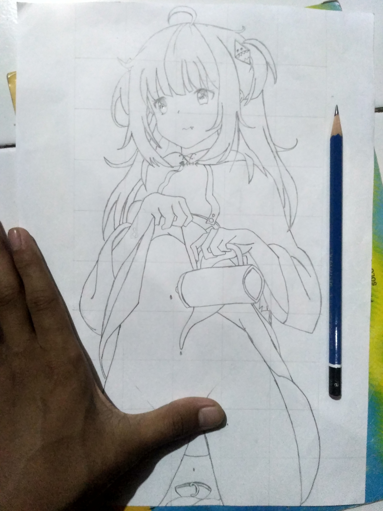
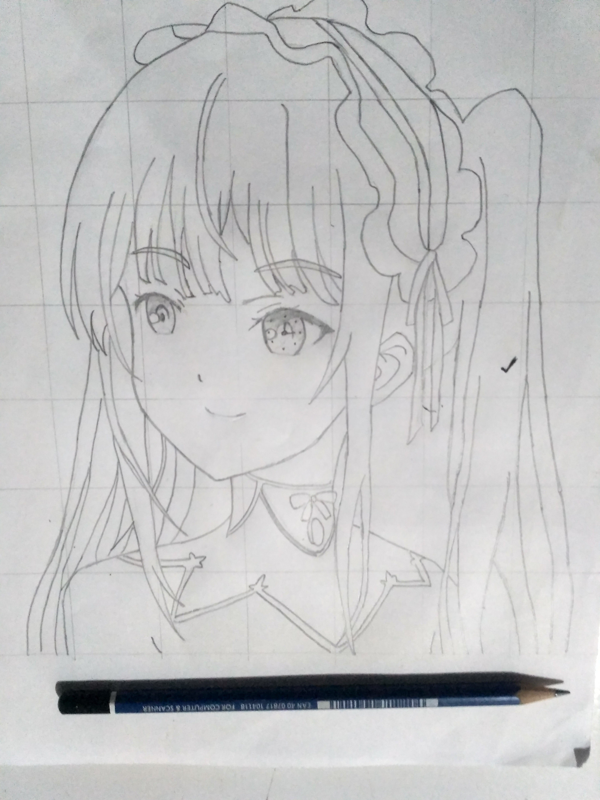
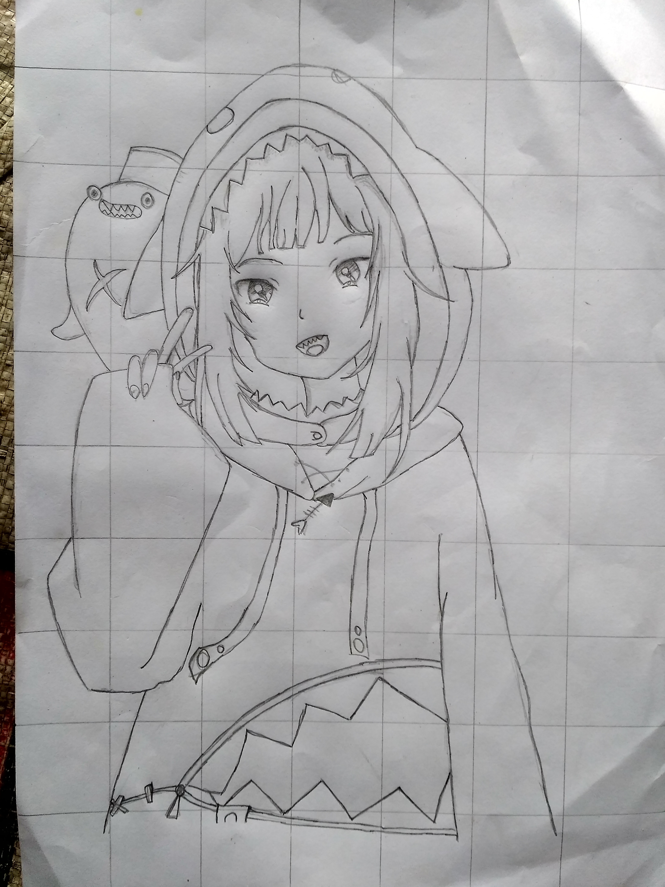
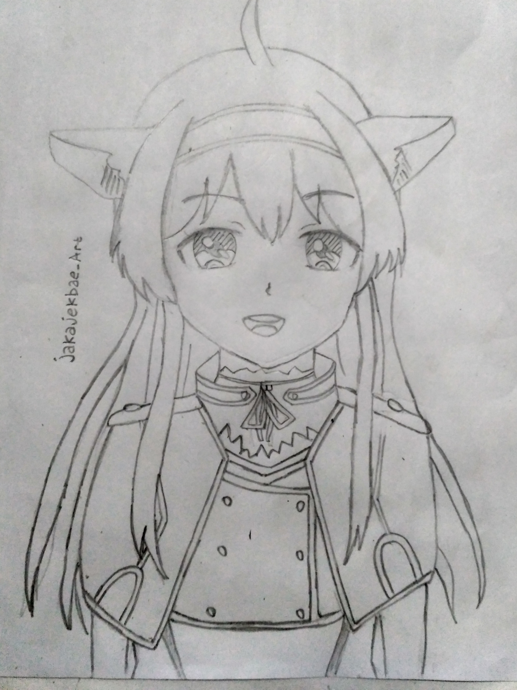
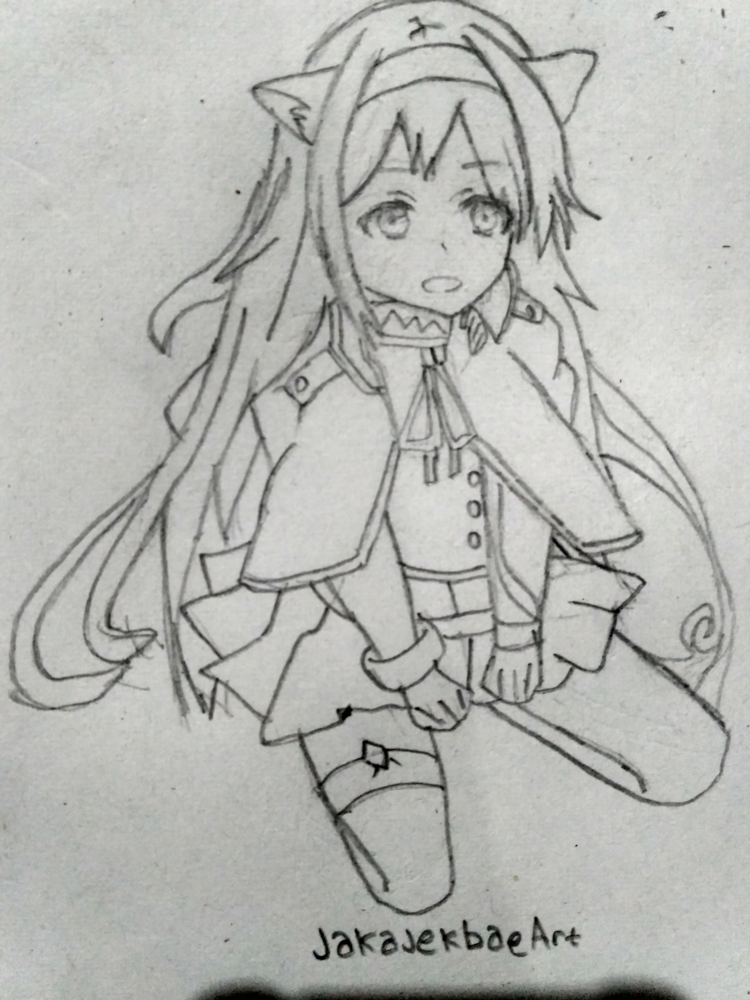

Portfolio

Karakter aqua dari konosuba, digambar menggunakan pensil dan memakai teknik grid untuk memudahkan menggambar

Gawr Gura adalah YouTuber Virtual Inggris yang terkait dengan Hololive, ini juga di gambar dengan menggunakan grid

Karakter Kurumi Tokisaki cewek yandere dari serial date a bullet kalo gak salah, di gambar menggunakan grid

Ini juga gawr gura, sama seperti diatas yang di gambar menggunakan grid

Nah kalo ini karakter sistine fibel dari serial Rokudenashi Majutsu Koushi to Akashic Records di gambar tanpa grid

ini juga sistine fibel dari serial Rokudenashi Majutsu Koushi to Akashic, Gambar tradi pertama saya di gambar tanpa grid
- note : gambar di atas bukan murni buatan saya, gambar di atas hanyalah redraw